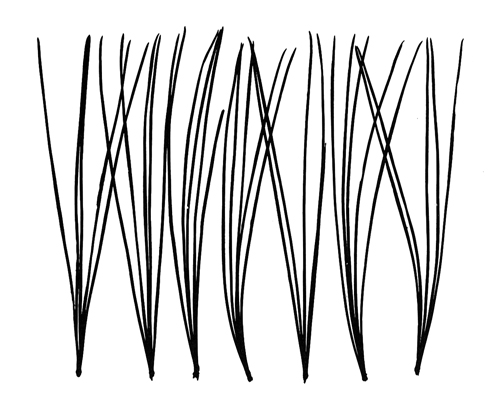

licht

Das Spiel l i c h t beschäftigt sich mit dem magischen Moment der analogen Fotografie: der Arbeit in der
Dunkelkammer. Was geschieht, wenn das belichtete Fotopapier ins Entwicklerbad getaucht wird? Welche
Spur hinterlässt das Licht? Das Fotogramm funktioniert wie ein Abdruck, der nicht durch Farbe sondern
durch Licht entsteht. Dazu legt man Gegenstände direkt auf Papier und belichtet sie. Was sagen uns
die Formen über die Dinge? Was sagen uns die Dinge über die Formen? Und muss es dabei immer darum gehen,
etwas abzubilden? Können wir im Vertrauten nicht auch das Fremde, im Fremden das Vertraute sehen?
werk
Ganz wörtlich bedeutet Fotografie mit Licht malen, schreiben oder zeichnen. Monika von Boch hat der
aufwendigen Arbeit in der Dunkelkammer, mit Chemikalien und Materialien, mit Belichtungs- und Entwicklungszeiten,
immer sehr viel Aufmerksamkeit geschenkt. Dort fand für sie, die schon als Kind viel zeichnete, die eigentliche
Arbeit am Bild statt. Eine sehr einfache Technik für die bildnerische Arbeit mit Licht ist das Fotogramm.
Man braucht dazu weder eine Kamera noch eine Ausrüstung. Die Bilder entstehen einfach als Negativabdruck
durch die Belichtung eines direkt auf ein lichtempfindliches Papier aufgelegten Objektes. Je nachdem, wie
lichtundurchlässig das Objekt ist, bleibt das Papier an dieser Stelle weiß, während sich die belichteten
Stellen bei der Entwicklung schwarz färben.
Monika von Boch experimentiert viel mit dieser Technik. Sie arbeitet mit durchsichtigen Materialien wie Glas oder mit Unschärfen, die durch Bewegung der Objekte entstehen. Auch hier zeigt sich ihr Interesse für alles Pflanzliche. Aus Pflanzen und Pflanzenteilen entstehen viele rätselhafte und spannende Formen, manchmal auch durch eigene Anordnungen oder das Erkennen von Mustern. Wie eine Forscherin untersucht die Künstlerin diese Dinge, indem sie sie statt unter ein Mikroskop unter ihren Belichtungsapparat legt. Sie sagt:
»Es ist eigentlich Neugier (...). Jede Forschung ist ja so, dass man wissen will, was dann kommt, nicht?«
(Monika von Boch)
Monika von Boch experimentiert viel mit dieser Technik. Sie arbeitet mit durchsichtigen Materialien wie Glas oder mit Unschärfen, die durch Bewegung der Objekte entstehen. Auch hier zeigt sich ihr Interesse für alles Pflanzliche. Aus Pflanzen und Pflanzenteilen entstehen viele rätselhafte und spannende Formen, manchmal auch durch eigene Anordnungen oder das Erkennen von Mustern. Wie eine Forscherin untersucht die Künstlerin diese Dinge, indem sie sie statt unter ein Mikroskop unter ihren Belichtungsapparat legt. Sie sagt:
»Es ist eigentlich Neugier (...). Jede Forschung ist ja so, dass man wissen will, was dann kommt, nicht?«
(Monika von Boch)

Monika von Boch, Weymouthskiefernadeln, Fotogramm, 1962, Foto aus: J. A. Schmoll genannt Eisenwerth: Monika von Boch, Das fotografische Werk 1950–1980. Dillingen 1982, S. 49
galerie